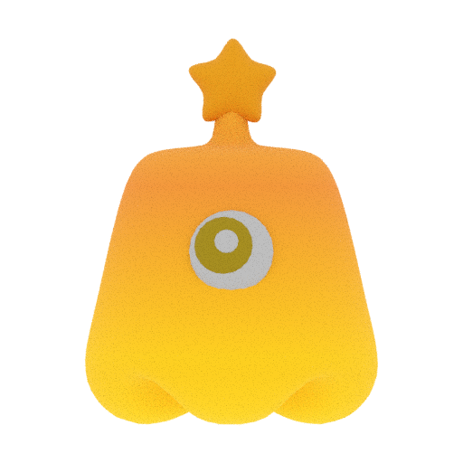

床に置いて、近づいたり周りを歩いたりしてみてね

iPhoneはSafariで開いて、「AR」を選択
このブラウザでは空間ARを開始できません。iPhoneはSafari、AndroidはAR対応のChromeで開いてください。
アプリ内で開いている場合は、リンクをコピーしてSafariアプリのアドレス欄に貼り付けてください。Safariでも「AR」が灰色になる場合は、この操作だけでは解決しないため、画面の状態をお知らせください。